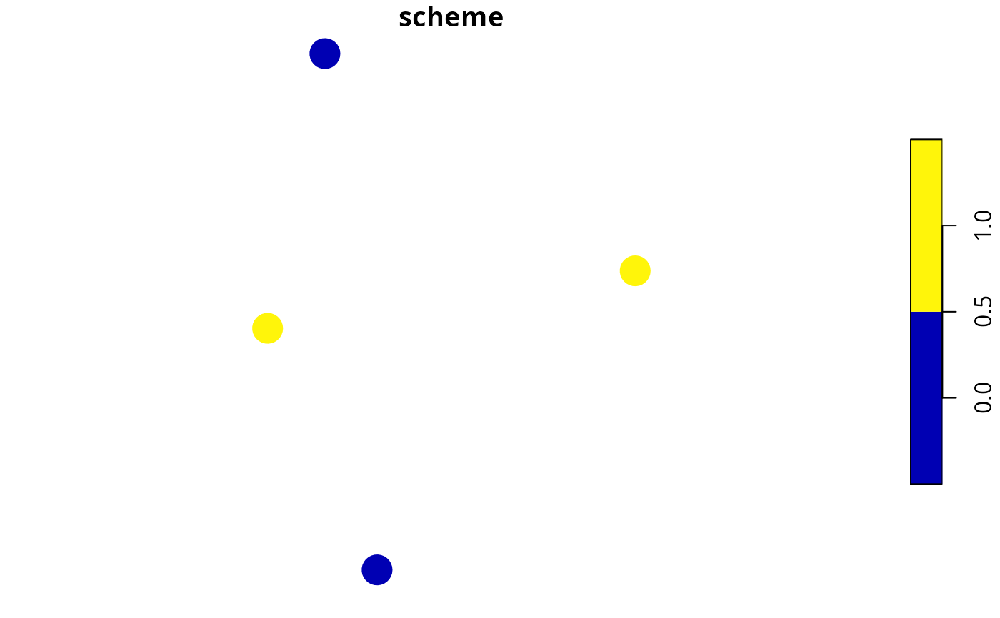

Generate a survey scheme by maximizing the geographic coverage of surveys. Please note that this function requires the Gurobi optimization software (https://www.gurobi.com/) and the gurobi R package (installation instructions available for Linux, Windows, and Mac OS).
geo_cov_survey_scheme( site_data, cost_column, survey_budget, locked_in_column = NULL, locked_out_column = NULL, exclude_locked_out = FALSE, verbose = FALSE )
| site_data |
|
|---|---|
| cost_column |
|
| survey_budget |
|
| locked_in_column |
|
| locked_out_column |
|
| exclude_locked_out |
|
| verbose |
|
matrix of logical (TRUE/ FALSE)
values indicating if a site is selected in a scheme or not. Columns
correspond to sites, and rows correspond to different schemes.
The integer programming formulation of the p-Median problem (Daskin & Maass 2015) is used to generate survey schemes.
Daskin MS & Maass KL (2015) The p-median problem. In Location Science (pp. 21-45). Springer, Cham.
# \dontrun{ # set seed for reproducibility set.seed(123) # simulate data x <- sf::st_as_sf( tibble::tibble(x = rnorm(4), y = rnorm(4), v1 = c(0.1, 0.2, 0.3, 10), # environmental axis 1 v2 = c(0.1, 0.2, 0.3, 10), # environmental axis 2 cost = rep(1, 4)), coords = c("x", "y")) # plot the sites' locations plot(st_geometry(x), pch = 16, cex = 3)# generate scheme with a budget of 2 s <- geo_cov_survey_scheme(x, "cost", 2) # print scheme print(s)#> [,1] [,2] [,3] [,4] #> [1,] TRUE FALSE TRUE FALSE# }